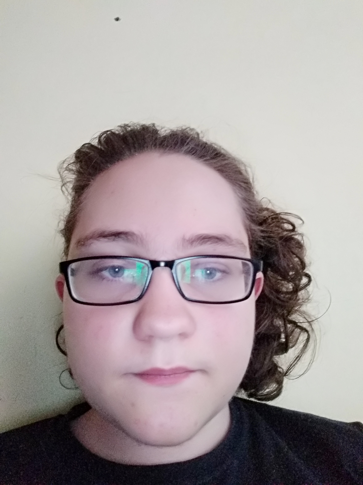

Önéletrajz

Személyes információk
Tanulmányok:
2012-2020 általános iskola: Kölcsey Ferenc Református általános iskola
2020-jelen közép iskola: DSZC Mechwart András Gépipari és Informatikai Technikum
Nyelvismeret: Angol passzív alapszinten (iskolai tanulmányok alatt)
Hogy mivel fogok foglalkozni, vagy hogy milyen céljaim vannak? Hát ez elég nehéz kérdés most igazából inkább visz az élet és lessz ami lesz, nem tudom pontosan hogy 5-10 év mulva mivel fogok foglalkozni most tanulok valamit, de nem tudom hogy azt fogom e csinálni, vagy inkább tovább tanulok. Milyen céljaim vannak? Most az eggyetlen célom elvégezni a középiskolát, de hogy utánna mi lessz azt nem tudom.